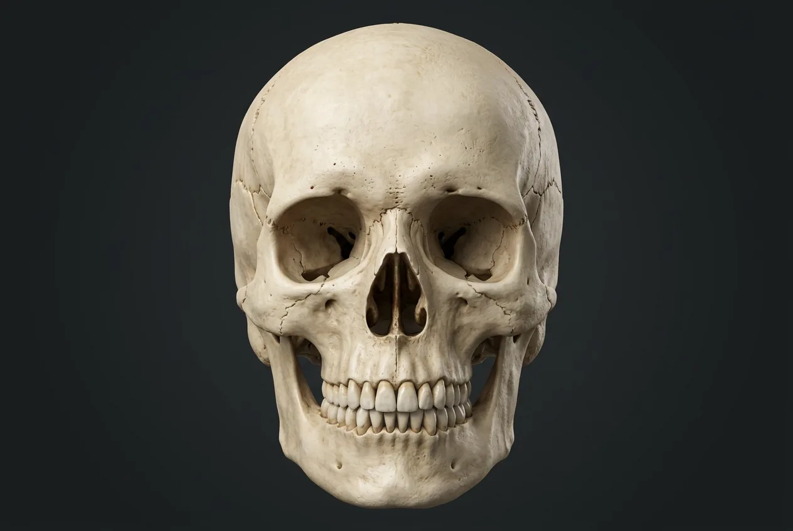

Anterior skull · surface bones
Visible forehead, upper and lower jaws, cheeks and bony nasal bridge. Deep parts do not get front-view pointers.
Name all 14 facial and 8 cranial bones with realistic frontal and sectional skull illustrations, landmarks, functions and facial nerve connections.

Left parietal boneBony orbitRight nasal boneLeft temporal boneLeft lacrimal boneRight zygomatic boneInfraorbital foramenRight maxillaMental foramenCoronal and sagittal suturesFrontal boneLeft nasal boneLeft zygomatic boneZygomatic archLeft maxillaTemporomandibular jointMandibleAn adult skull has 22 bones: 14 facial (six paired types and the unpaired vomer and mandible) and 8 cranial. The maxillae anchor upper teeth, the mandible is the mobile lower jaw, and the palatine bones lie deep at the back of the hard palate. Ethmoid contributes to the upper bony nasal septum but is counted as a cranial bone; the inferior nasal conchae are separate paired facial bones. A front view cannot reliably identify every deep or posterior bone; those entries use an unpinned sectional reference. The hyoid and the six ear ossicles belong in the wider 206-bone adult skeleton count but not the 22 skull bones.
The illustrations are teaching models, not patient scans. A deep or hidden bone never gets a front-view pin. The hyoid and six ear ossicles are counted in the 206-bone skeleton, but not among the 22 skull bones.
Visible forehead, upper and lower jaws, cheeks and bony nasal bridge. Deep parts do not get front-view pointers.
Educational sagittal cutaway for the bony palate, septum and skull base; not a clinical scan.
See all 206 adult bones → · Facial nerve CN VII → · Facial sensation CN V →
These 17 structures describe anatomy related to the chapter’s regional illustration. Each entry separates location, function and a clinical point.
Forms the forehead, roof of the orbits and much of the anterior cranial floor.
What it doesProtects frontal brain and supports the upper orbit.
Clinical connectionThe frontal sinus lies within the bone; fracture patterns can involve the anterior cranial floor.
Left upper side of the cranial vault, meeting the opposite parietal along the sagittal suture.
What it doesEncloses and protects the upper brain.
Clinical connectionDo not mistake a normal suture line for a fracture without clinical imaging.
Left lower side and skull base, including squamous, mastoid and petrous regions.
What it doesSupports the jaw joint and shields the inner ear.
Clinical connectionTemporal-bone injury may involve hearing or the facial nerve.
Right upper jaw below the orbit, housing upper-tooth sockets and much of the maxillary sinus.
What it doesForms upper jaw, orbit floor and anterior hard palate.
Clinical connectionThe infraorbital nerve (CN V2) exits through its infraorbital foramen.
Left upper jaw below the orbit; meets the opposite maxilla at the anterior midline.
What it doesHolds upper teeth and forms the left anterior hard palate.
Clinical connectionDental roots and maxillary sinus lie close together.
Right cheekbone forming the lateral rim and part of the floor of the orbit.
What it doesSupports cheek contour and the bony orbit.
Clinical connectionZygomatic fractures may affect the orbital rim and cheek projection.
Left cheekbone forming the outer orbital rim and meeting the temporal bone at the arch.
What it doesProtects the outer orbit and supports facial shape.
Clinical connectionAn orbital rim injury can involve the neighboring maxilla.
Small right bone at the bony bridge of the nose, above the nasal opening.
What it doesForms the upper nasal bridge, not the flexible nose tip.
Clinical connectionFractures often involve nasal bones but the lower nose is mainly cartilage.
Small left bone joining the opposite nasal bone along the midline of the bridge.
What it doesSupports the upper nose and meets the frontal bone.
Clinical connectionAn injured nasal bridge can be accompanied by septal injury.
Small bone of the left anterior medial orbital wall, near the nasolacrimal canal.
What it doesHelps support the tear-drainage pathway.
Clinical connectionA diagram of the orbit is needed to isolate it from adjacent bones.
Single adult lower jaw consisting of a body and paired ascending rami.
What it doesHouses lower teeth and moves at the temporomandibular joints for chewing and speech.
Clinical connectionThe only normally mobile bone of the adult skull; the hyoid is a separate neck bone.
The paired skull sockets are assembled from seven bones; not separate bones themselves.
What it doesSurround and protect the eyes and provide attachment sites.
Clinical connectionOrbital fractures can affect eye movement and sensation.
Opening in each maxilla beneath the lower orbital rim.
What it doesTransmits the infraorbital nerve (CN V2) and vessels.
Clinical connectionA cheek or upper-lip sensory change after midface trauma may involve V2.
Opening on each side of the anterior mandibular body below the premolar region.
What it doesTransmits the mental nerve (CN V3 branch) and vessels.
Clinical connectionThe mental nerve gives sensation to lower lip and chin.
Bony bridge built from zygomatic and temporal bone projections on each side.
What it doesProvides attachment for masseter and forms cheek contour.
Clinical connectionThe arch is a joint construction, not a separate facial bone.
Articulation between each mandibular condyle and temporal bone.
What it doesPermits mouth opening, closing and gliding.
Clinical connectionFacial expression is mainly CN VII motor; jaw closing muscles are supplied by CN V3.
Fibrous seams joining frontal to parietal, and right to left parietal bones.
What it doesStabilize the cranial vault.
Clinical connectionSutures are not additional counted bones.
These 13 additional entries give anatomical context. They are deliberately not assigned a photographic pin on the regional image.
Right upper side of the cranial vault; meets the frontal, opposite parietal, occipital and temporal bones.
What it doesProtects the superior and lateral cerebrum.
Clinical connectionSutures remain identifiable in adult skulls; a head injury needs clinical assessment.
Right lower side and base of the skull, surrounding the external acoustic opening and internal ear spaces.
What it doesHouses hearing and balance structures; helps form the jaw joint.
Clinical connectionCN VII passes through its facial canal and exits at the stylomastoid foramen.
Posterior skull and base, surrounding the foramen magnum and meeting the parietal bones at the lambdoid suture.
What it doesProtects the rear brain and allows the spinal cord to pass through the skull base.
Clinical connectionThe occipital condyles articulate with the atlas (C1).
Central skull-base bone spanning the middle cranial fossa behind the orbits.
What it doesConnects many skull bones and contributes to the orbit.
Clinical connectionThe optic canal and several nerve passages relate to the sphenoid.
Between the orbits; forms the upper nasal septum, parts of the orbit and nasal roof.
What it doesSupports the olfactory region and separates the upper nasal cavity from the cranial cavity.
Clinical connectionIts middle and superior nasal conchae are parts of the ethmoid, not independent facial bones.
Small plate deep in the right anterior medial orbit, beside the tear-drainage channel.
What it doesForms part of the medial orbital wall and lacrimal fossa.
Clinical connectionNot reliably distinguishable on a straight-on external skull view.
Deep behind the right maxilla; its horizontal plate forms the posterior part of the hard palate.
What it doesSeparates oral and nasal cavities at the back of the bony palate.
Clinical connectionThe posterior quarter of the hard palate is formed by paired palatine bones.
Deep behind the left maxilla, contributing to the posterior hard palate and nasal wall.
What it doesHelps form the bony roof of the mouth and a small part of the orbit.
Clinical connectionNot a surface cheekbone; a section or inferior view is needed.
Independent curved bone projecting from the lower right lateral wall of the nasal cavity.
What it doesHelps direct inspired air across the moist nasal lining.
Clinical connectionThe middle and superior conchae instead belong to the ethmoid bone.
Independent curved bone along the lower left wall of the nasal cavity.
What it doesExpands mucosal contact area for warming and humidifying air.
Clinical connectionNasal congestion is not explained by the bone shape alone.
Thin midline bone forming the lower and posterior bony nasal septum, deep within the nasal cavity.
What it doesHelps divide left and right nasal passages.
Clinical connectionThe upper septum is ethmoid; the anterior septum also contains cartilage.
Anterior three quarters are maxillary palatine processes; posterior quarter is palatine bone.
What it doesSeparates nasal and oral cavities during breathing and feeding.
Clinical connectionThe bony palate is a structure made by bones, not a 23rd skull bone.
Upper section is the perpendicular plate of ethmoid; lower/posterior section is the vomer.
What it doesSeparates left and right nasal cavities.
Clinical connectionSeptal cartilage adds the anterior mobile portion.
Short answers grounded in the structures described above. Use the illustrated guide for anatomical context.
Fourteen: paired maxillae, zygomatic, nasal, lacrimal, palatine and inferior nasal concha bones, plus the single vomer and mandible. The adult skull also has eight cranial bones, for 22 skull bones in total.
The maxillae form the upper jaw, the zygomatic bones form the cheeks, the nasal bones form the bony bridge of the nose, and the single mandible forms the lower jaw. Small lacrimal and deep palatine bones cannot reliably be isolated on a simple anterior photograph.
No. Right and left inferior nasal conchae are independent facial bones. The middle and superior conchae are parts of the ethmoid, which is counted as a cranial bone.
No. The six middle-ear ossicles and the single hyoid bone are additional bones associated with the head and neck; they are included separately in the conventional 206-bone adult skeleton count.
Facial nerve CN VII drives most muscles of facial expression after passing through the temporal bone and parotid region. Trigeminal CN V carries most facial skin sensation, and its V3 division supplies the major jaw-closing muscles. Bones and nerves are different structures.
Follow these connected structures and body systems in the illustrated atlas.
 Teeth · dental anatomyFollow crown-to-root layers, 32 permanent and 20 primary tooth positions, class shapes, FDI/Universal numbers and dental sensory nerves.↗
Teeth · dental anatomyFollow crown-to-root layers, 32 permanent and 20 primary tooth positions, class shapes, FDI/Universal numbers and dental sensory nerves.↗ SkeletonThe frame: leverage for muscle, armour for viscera, a calcium bank, and the marrow factory that makes every blood cell.↗
SkeletonThe frame: leverage for muscle, armour for viscera, a calcium bank, and the marrow factory that makes every blood cell.↗ Facial nerve · CN VIITrack facial motor branches, taste, lacrimation and salivation through the temporal bone and parotid gland.↗
Facial nerve · CN VIITrack facial motor branches, taste, lacrimation and salivation through the temporal bone and parotid gland.↗ Trigeminal nerve · CN VMap facial sensation and masticatory motor fibers without confusing trigeminal CN V with facial CN VII.↗
Trigeminal nerve · CN VMap facial sensation and masticatory motor fibers without confusing trigeminal CN V with facial CN VII.↗General anatomy references and related source chapters for continued study. These links do not make the digital illustrations clinical images or certify every anatomical variant.
This educational page is not medical advice and has not undergone formal clinical peer review. Spotted an error? Contact the editor.
Open the realistic interactive plate, label lines, focus view and self-test.